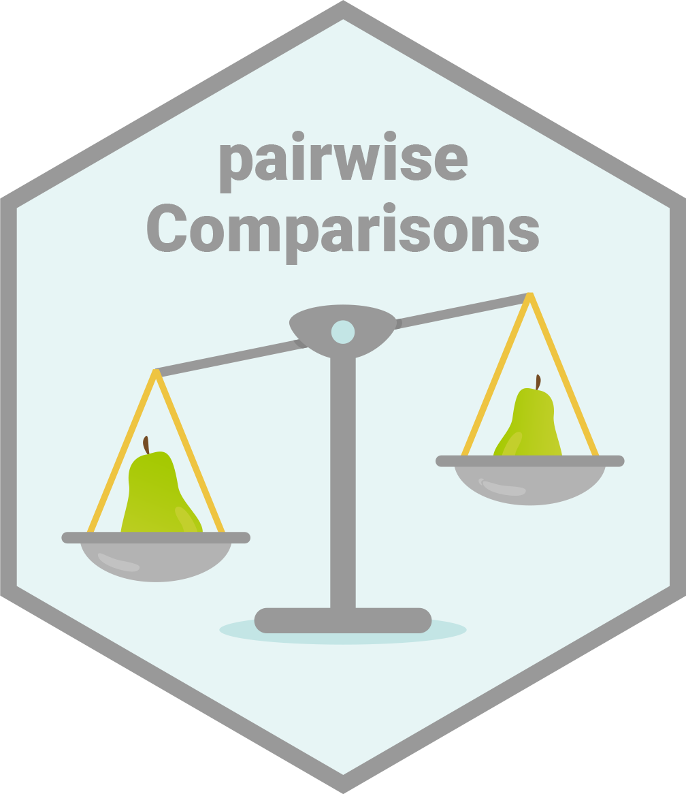
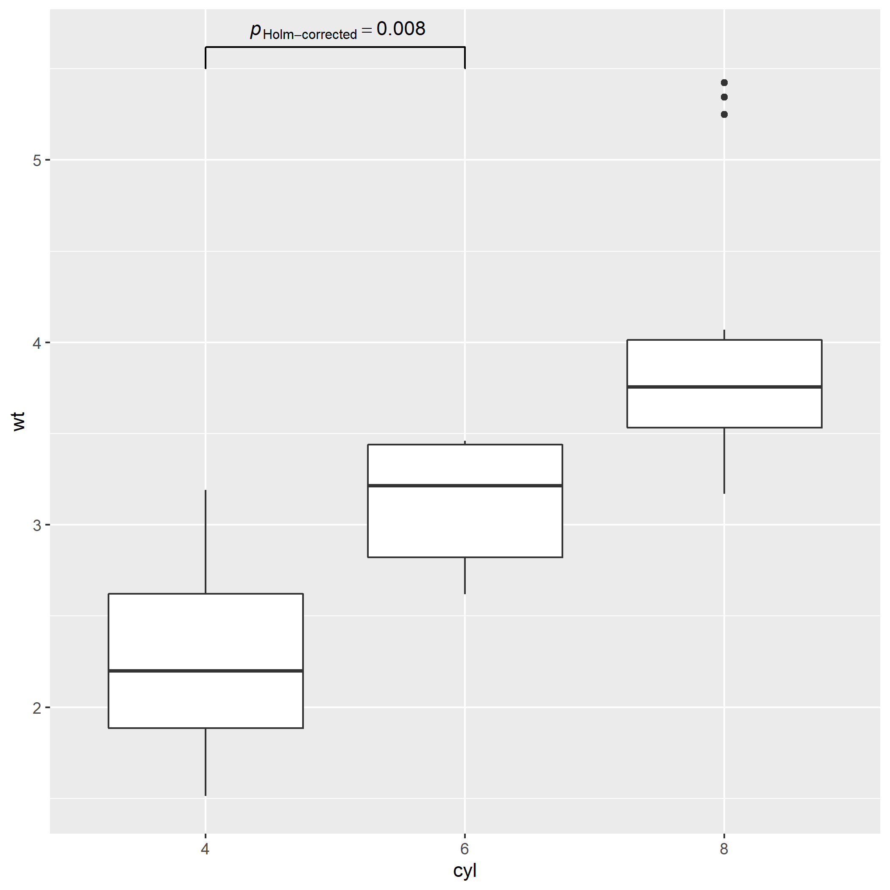
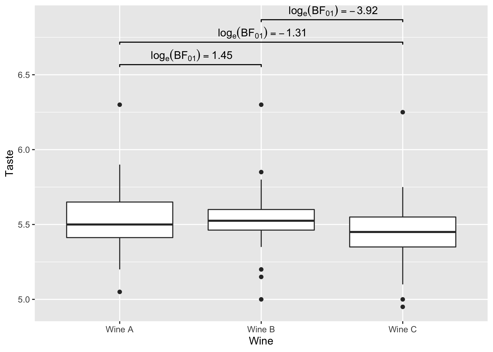

Introduction 
pairwiseComparisons provides a tidy data friendly way to carry out pairwise comparison tests.
It currently supports post hoc multiple pairwise comparisons tests for both between-subjects and within-subjects one-way analysis of variance designs. For both of these designs, parametric, non-parametric, robust, and Bayesian statistical tests are available.
Installation
| Type | Source | Command |
|---|---|---|
| Release | CRAN | install.packages("pairwiseComparisons") |
| Development | GitHub | remotes::install_github("IndrajeetPatil/pairwiseComparisons") |
Linux users may encounter some installation problems. In particular, the pairwiseComparisons package depends on the PMCMRplus package.
ERROR: dependencies ‘gmp’, ‘Rmpfr’ are not available for package ‘PMCMRplus’
ERROR: dependency ‘pairwiseComparisons’ is not available for package ‘ggstatsplot’This means that your operating system lacks gmp and Rmpfr libraries.
If you use Ubuntu, you can install these dependencies:
sudo apt-get install libgmp3-dev
sudo apt-get install libmpfr-devThe following README file briefly describes the installation procedure: https://CRAN.R-project.org/package=PMCMRplus/readme/README.html
Summary of types of statistical analyses
Following table contains a brief summary of the currently supported pairwise comparison tests-
Between-subjects design
| Type | Equal variance? | Test | p-value adjustment? | Function used |
|---|---|---|---|---|
| Parametric | No | Games-Howell test | ✅ | stats::pairwise.t.test |
| Parametric | Yes | Student’s t-test | ✅ | PMCMRplus::gamesHowellTest |
| Non-parametric | No | Dunn test | ✅ | PMCMRplus::kwAllPairsDunnTest |
| Robust | No | Yuen’s trimmed means test | ✅ | WRS2::lincon |
| Bayesian | NA |
Student’s t-test | NA |
BayesFactor::ttestBF |
Within-subjects design
| Type | Test | p-value adjustment? | Function used |
|---|---|---|---|
| Parametric | Student’s t-test | ✅ | stats::pairwise.t.test |
| Non-parametric | Durbin-Conover test | ✅ | PMCMRplus::durbinAllPairsTest |
| Robust | Yuen’s trimmed means test | ✅ | WRS2::rmmcp |
| Bayesian | Student’s t-test | NA |
BayesFactor::ttestBF |
Examples
Here we will see specific examples of how to use this function for different types of
- designs (between or within subjects)
- statistics (parametric, non-parametric, robust, Bayesian)
- p-value adjustment methods
Between-subjects design
# for reproducibility
set.seed(123)
library(pairwiseComparisons)
# parametric
# if `var.equal = TRUE`, then Student's *t*-test will be run
pairwise_comparisons(
data = ggplot2::msleep,
x = vore,
y = brainwt,
type = "parametric",
var.equal = TRUE,
paired = FALSE,
p.adjust.method = "bonferroni"
)
#> # A tibble: 6 x 6
#> group1 group2 p.value test.details p.value.adjustment
#> <chr> <chr> <dbl> <chr> <chr>
#> 1 carni herbi 1 Student's t-test Bonferroni
#> 2 carni insecti 1 Student's t-test Bonferroni
#> 3 carni omni 1 Student's t-test Bonferroni
#> 4 herbi insecti 1 Student's t-test Bonferroni
#> 5 herbi omni 0.979 Student's t-test Bonferroni
#> 6 insecti omni 1 Student's t-test Bonferroni
#> label
#> <chr>
#> 1 list(~italic(p)[Bonferroni-corrected]==1.000)
#> 2 list(~italic(p)[Bonferroni-corrected]==1.000)
#> 3 list(~italic(p)[Bonferroni-corrected]==1.000)
#> 4 list(~italic(p)[Bonferroni-corrected]==1.000)
#> 5 list(~italic(p)[Bonferroni-corrected]==0.979)
#> 6 list(~italic(p)[Bonferroni-corrected]==1.000)
# if `var.equal = FALSE`, then Games-Howell test will be run
pairwise_comparisons(
data = ggplot2::msleep,
x = vore,
y = brainwt,
type = "parametric",
var.equal = FALSE,
paired = FALSE,
p.adjust.method = "bonferroni"
)
#> # A tibble: 6 x 11
#> group1 group2 statistic p.value alternative method distribution
#> <chr> <chr> <dbl> <dbl> <chr> <chr> <chr>
#> 1 carni herbi 2.17 1 two.sided Games-Howell test q
#> 2 carni insecti -2.17 1 two.sided Games-Howell test q
#> 3 carni omni 1.10 1 two.sided Games-Howell test q
#> 4 herbi insecti -2.41 1 two.sided Games-Howell test q
#> 5 herbi omni -1.87 1 two.sided Games-Howell test q
#> 6 insecti omni 2.19 1 two.sided Games-Howell test q
#> p.adjustment test.details p.value.adjustment
#> <chr> <chr> <chr>
#> 1 none Games-Howell test Bonferroni
#> 2 none Games-Howell test Bonferroni
#> 3 none Games-Howell test Bonferroni
#> 4 none Games-Howell test Bonferroni
#> 5 none Games-Howell test Bonferroni
#> 6 none Games-Howell test Bonferroni
#> label
#> <chr>
#> 1 list(~italic(p)[Bonferroni-corrected]==1.000)
#> 2 list(~italic(p)[Bonferroni-corrected]==1.000)
#> 3 list(~italic(p)[Bonferroni-corrected]==1.000)
#> 4 list(~italic(p)[Bonferroni-corrected]==1.000)
#> 5 list(~italic(p)[Bonferroni-corrected]==1.000)
#> 6 list(~italic(p)[Bonferroni-corrected]==1.000)
# non-parametric
pairwise_comparisons(
data = ggplot2::msleep,
x = vore,
y = brainwt,
type = "nonparametric",
paired = FALSE,
p.adjust.method = "none"
)
#> # A tibble: 6 x 11
#> group1 group2 statistic p.value alternative method
#> <chr> <chr> <dbl> <dbl> <chr> <chr>
#> 1 carni herbi 0.582 0.561 two.sided Dunn's all-pairs test
#> 2 carni insecti 1.88 0.0595 two.sided Dunn's all-pairs test
#> 3 carni omni 1.14 0.254 two.sided Dunn's all-pairs test
#> 4 herbi insecti 1.63 0.102 two.sided Dunn's all-pairs test
#> 5 herbi omni 0.717 0.474 two.sided Dunn's all-pairs test
#> 6 insecti omni 1.14 0.254 two.sided Dunn's all-pairs test
#> distribution p.adjustment test.details p.value.adjustment
#> <chr> <chr> <chr> <chr>
#> 1 z none Dunn test None
#> 2 z none Dunn test None
#> 3 z none Dunn test None
#> 4 z none Dunn test None
#> 5 z none Dunn test None
#> 6 z none Dunn test None
#> label
#> <chr>
#> 1 list(~italic(p)[uncorrected]==0.561)
#> 2 list(~italic(p)[uncorrected]==0.060)
#> 3 list(~italic(p)[uncorrected]==0.254)
#> 4 list(~italic(p)[uncorrected]==0.102)
#> 5 list(~italic(p)[uncorrected]==0.474)
#> 6 list(~italic(p)[uncorrected]==0.254)
# robust
pairwise_comparisons(
data = ggplot2::msleep,
x = vore,
y = brainwt,
type = "robust",
paired = FALSE,
p.adjust.method = "fdr"
)
#> # A tibble: 6 x 10
#> group1 group2 estimate conf.level conf.low conf.high p.value
#> <chr> <chr> <dbl> <dbl> <dbl> <dbl> <dbl>
#> 1 carni herbi -0.0323 0.95 -0.248 0.184 0.898
#> 2 carni insecti 0.0451 0.95 -0.0484 0.139 0.898
#> 3 carni omni 0.00520 0.95 -0.114 0.124 0.898
#> 4 herbi insecti 0.0774 0.95 -0.133 0.288 0.898
#> 5 herbi omni 0.0375 0.95 -0.182 0.257 0.898
#> 6 insecti omni -0.0399 0.95 -0.142 0.0625 0.898
#> test.details p.value.adjustment
#> <chr> <chr>
#> 1 Yuen's trimmed means test FDR
#> 2 Yuen's trimmed means test FDR
#> 3 Yuen's trimmed means test FDR
#> 4 Yuen's trimmed means test FDR
#> 5 Yuen's trimmed means test FDR
#> 6 Yuen's trimmed means test FDR
#> label
#> <chr>
#> 1 list(~italic(p)[FDR-corrected]==0.898)
#> 2 list(~italic(p)[FDR-corrected]==0.898)
#> 3 list(~italic(p)[FDR-corrected]==0.898)
#> 4 list(~italic(p)[FDR-corrected]==0.898)
#> 5 list(~italic(p)[FDR-corrected]==0.898)
#> 6 list(~italic(p)[FDR-corrected]==0.898)
# Bayesian
pairwise_comparisons(
data = ggplot2::msleep,
x = vore,
y = brainwt,
type = "bayes",
paired = FALSE
)
#> # A tibble: 6 x 18
#> group1 group2 term estimate conf.level conf.low conf.high pd
#> <chr> <chr> <chr> <dbl> <dbl> <dbl> <dbl> <dbl>
#> 1 carni herbi Difference 0.376 0.95 -0.525 1.33 0.800
#> 2 carni insecti Difference -0.0348 0.95 -0.127 0.0425 0.818
#> 3 carni omni Difference 0.0440 0.95 -0.139 0.239 0.693
#> 4 herbi insecti Difference -0.394 0.95 -1.61 0.775 0.758
#> 5 herbi omni Difference -0.362 0.95 -1.06 0.345 0.859
#> 6 insecti omni Difference 0.0762 0.95 -0.153 0.339 0.732
#> rope.percentage prior.distribution prior.location prior.scale bf10
#> <dbl> <chr> <dbl> <dbl> <dbl>
#> 1 0.183 cauchy 0 0.707 0.540
#> 2 0.143 cauchy 0 0.707 0.718
#> 3 0.252 cauchy 0 0.707 0.427
#> 4 0.177 cauchy 0 0.707 0.540
#> 5 0.172 cauchy 0 0.707 0.571
#> 6 0.172 cauchy 0 0.707 0.545
#> method expression log_e_bf10 label
#> <chr> <list> <dbl> <chr>
#> 1 Bayesian t-test <language> -0.617 list(~log[e](BF['01'])==0.62)
#> 2 Bayesian t-test <language> -0.332 list(~log[e](BF['01'])==0.33)
#> 3 Bayesian t-test <language> -0.851 list(~log[e](BF['01'])==0.85)
#> 4 Bayesian t-test <language> -0.616 list(~log[e](BF['01'])==0.62)
#> 5 Bayesian t-test <language> -0.560 list(~log[e](BF['01'])==0.56)
#> 6 Bayesian t-test <language> -0.606 list(~log[e](BF['01'])==0.61)
#> test.details
#> <chr>
#> 1 Student's t-test
#> 2 Student's t-test
#> 3 Student's t-test
#> 4 Student's t-test
#> 5 Student's t-test
#> 6 Student's t-testWithin-subjects design
# for reproducibility
set.seed(123)
# parametric
pairwise_comparisons(
data = bugs_long,
x = condition,
y = desire,
subject.id = subject,
type = "parametric",
paired = TRUE,
p.adjust.method = "BH"
)
#> # A tibble: 6 x 6
#> group1 group2 p.value test.details p.value.adjustment
#> <chr> <chr> <dbl> <chr> <chr>
#> 1 HDHF HDLF 1.06e- 3 Student's t-test FDR
#> 2 HDHF LDHF 7.02e- 2 Student's t-test FDR
#> 3 HDHF LDLF 3.95e-12 Student's t-test FDR
#> 4 HDLF LDHF 6.74e- 2 Student's t-test FDR
#> 5 HDLF LDLF 1.99e- 3 Student's t-test FDR
#> 6 LDHF LDLF 6.66e- 9 Student's t-test FDR
#> label
#> <chr>
#> 1 list(~italic(p)[FDR-corrected]==0.001)
#> 2 list(~italic(p)[FDR-corrected]==0.070)
#> 3 list(~italic(p)[FDR-corrected]==3.95e-12)
#> 4 list(~italic(p)[FDR-corrected]==0.067)
#> 5 list(~italic(p)[FDR-corrected]==0.002)
#> 6 list(~italic(p)[FDR-corrected]==6.66e-09)
# non-parametric
pairwise_comparisons(
data = bugs_long,
x = condition,
y = desire,
subject.id = subject,
type = "nonparametric",
paired = TRUE,
p.adjust.method = "BY"
)
#> # A tibble: 6 x 11
#> group1 group2 statistic p.value alternative
#> <chr> <chr> <dbl> <dbl> <chr>
#> 1 HDHF HDLF 4.78 1.44e- 5 two.sided
#> 2 HDHF LDHF 2.44 4.47e- 2 two.sided
#> 3 HDHF LDLF 8.01 5.45e-13 two.sided
#> 4 HDLF LDHF 2.34 4.96e- 2 two.sided
#> 5 HDLF LDLF 3.23 5.05e- 3 two.sided
#> 6 LDHF LDLF 5.57 4.64e- 7 two.sided
#> method
#> <chr>
#> 1 Durbin's all-pairs test for a two-way balanced incomplete block design
#> 2 Durbin's all-pairs test for a two-way balanced incomplete block design
#> 3 Durbin's all-pairs test for a two-way balanced incomplete block design
#> 4 Durbin's all-pairs test for a two-way balanced incomplete block design
#> 5 Durbin's all-pairs test for a two-way balanced incomplete block design
#> 6 Durbin's all-pairs test for a two-way balanced incomplete block design
#> distribution p.adjustment test.details p.value.adjustment
#> <chr> <chr> <chr> <chr>
#> 1 t none Durbin-Conover test BY
#> 2 t none Durbin-Conover test BY
#> 3 t none Durbin-Conover test BY
#> 4 t none Durbin-Conover test BY
#> 5 t none Durbin-Conover test BY
#> 6 t none Durbin-Conover test BY
#> label
#> <chr>
#> 1 list(~italic(p)[BY-corrected]==1.44e-05)
#> 2 list(~italic(p)[BY-corrected]==0.045)
#> 3 list(~italic(p)[BY-corrected]==5.45e-13)
#> 4 list(~italic(p)[BY-corrected]==0.050)
#> 5 list(~italic(p)[BY-corrected]==0.005)
#> 6 list(~italic(p)[BY-corrected]==4.64e-07)
# robust
pairwise_comparisons(
data = bugs_long,
x = condition,
y = desire,
subject.id = subject,
type = "robust",
paired = TRUE,
p.adjust.method = "hommel"
)
#> # A tibble: 6 x 11
#> group1 group2 estimate conf.level conf.low conf.high p.value p.crit
#> <chr> <chr> <dbl> <dbl> <dbl> <dbl> <dbl> <dbl>
#> 1 HDHF HDLF 1.03 0.95 0.140 1.92 0.00999 0.0127
#> 2 HDHF LDHF 0.454 0.95 -0.104 1.01 0.0520 0.025
#> 3 HDHF LDLF 1.95 0.95 1.09 2.82 0.000000564 0.00851
#> 4 HDLF LDHF -0.676 0.95 -1.61 0.256 0.0520 0.05
#> 5 HDLF LDLF 0.889 0.95 0.0244 1.75 0.0203 0.0169
#> 6 LDHF LDLF 1.35 0.95 0.560 2.14 0.000102 0.0102
#> test.details p.value.adjustment
#> <chr> <chr>
#> 1 Yuen's trimmed means test Hommel
#> 2 Yuen's trimmed means test Hommel
#> 3 Yuen's trimmed means test Hommel
#> 4 Yuen's trimmed means test Hommel
#> 5 Yuen's trimmed means test Hommel
#> 6 Yuen's trimmed means test Hommel
#> label
#> <chr>
#> 1 list(~italic(p)[Hommel-corrected]==0.010)
#> 2 list(~italic(p)[Hommel-corrected]==0.052)
#> 3 list(~italic(p)[Hommel-corrected]==5.64e-07)
#> 4 list(~italic(p)[Hommel-corrected]==0.052)
#> 5 list(~italic(p)[Hommel-corrected]==0.020)
#> 6 list(~italic(p)[Hommel-corrected]==1.02e-04)
# Bayesian
pairwise_comparisons(
data = bugs_long,
x = condition,
y = desire,
subject.id = subject,
type = "bayes",
paired = TRUE,
bf.prior = 0.77
)
#> # A tibble: 6 x 18
#> group1 group2 term estimate conf.level conf.low conf.high pd
#> <chr> <chr> <chr> <dbl> <dbl> <dbl> <dbl> <dbl>
#> 1 HDHF HDLF Difference -1.10 0.95 -1.73 -0.492 1
#> 2 HDHF LDHF Difference -0.465 0.95 -0.969 0.0406 0.962
#> 3 HDHF LDLF Difference -2.13 0.95 -2.64 -1.63 1
#> 4 HDLF LDHF Difference 0.652 0.95 -0.0362 1.32 0.971
#> 5 HDLF LDLF Difference -0.983 0.95 -1.60 -0.423 0.999
#> 6 LDHF LDLF Difference -1.67 0.95 -2.14 -1.14 1
#> rope.percentage prior.distribution prior.location prior.scale bf10
#> <dbl> <chr> <dbl> <dbl> <dbl>
#> 1 0 cauchy 0 0.77 3.95e+ 1
#> 2 0.151 cauchy 0 0.77 5.42e- 1
#> 3 0 cauchy 0 0.77 1.22e+10
#> 4 0.135 cauchy 0 0.77 6.50e- 1
#> 5 0 cauchy 0 0.77 1.72e+ 1
#> 6 0 cauchy 0 0.77 4.78e+ 6
#> method expression log_e_bf10 label
#> <chr> <list> <dbl> <chr>
#> 1 Bayesian t-test <language> 3.68 list(~log[e](BF['01'])==-3.68)
#> 2 Bayesian t-test <language> -0.612 list(~log[e](BF['01'])==0.61)
#> 3 Bayesian t-test <language> 23.2 list(~log[e](BF['01'])==-23.22)
#> 4 Bayesian t-test <language> -0.430 list(~log[e](BF['01'])==0.43)
#> 5 Bayesian t-test <language> 2.84 list(~log[e](BF['01'])==-2.84)
#> 6 Bayesian t-test <language> 15.4 list(~log[e](BF['01'])==-15.38)
#> test.details
#> <chr>
#> 1 Student's t-test
#> 2 Student's t-test
#> 3 Student's t-test
#> 4 Student's t-test
#> 5 Student's t-test
#> 6 Student's t-test
Using pairwiseComparisons with ggsignif
Example-1: between-subjects
# needed libraries
set.seed(123)
library(ggplot2)
library(pairwiseComparisons)
library(ggsignif)
# converting to factor
mtcars$cyl <- as.factor(mtcars$cyl)
# creating a basic plot
p <- ggplot(mtcars, aes(cyl, wt)) +
geom_boxplot()
# using `pairwiseComparisons` package to create a dataframe with results
set.seed(123)
(df <-
pairwise_comparisons(mtcars, cyl, wt) %>%
dplyr::mutate(groups = purrr::pmap(.l = list(group1, group2), .f = c)) %>%
dplyr::arrange(group1))
#> # A tibble: 3 x 12
#> group1 group2 statistic p.value alternative method distribution
#> <chr> <chr> <dbl> <dbl> <chr> <chr> <chr>
#> 1 4 6 5.39 0.00831 two.sided Games-Howell test q
#> 2 4 8 9.11 0.0000124 two.sided Games-Howell test q
#> 3 6 8 5.12 0.00831 two.sided Games-Howell test q
#> p.adjustment test.details p.value.adjustment
#> <chr> <chr> <chr>
#> 1 none Games-Howell test Holm
#> 2 none Games-Howell test Holm
#> 3 none Games-Howell test Holm
#> label groups
#> <chr> <list>
#> 1 list(~italic(p)[Holm-corrected]==0.008) <chr [2]>
#> 2 list(~italic(p)[Holm-corrected]==1.24e-05) <chr [2]>
#> 3 list(~italic(p)[Holm-corrected]==0.008) <chr [2]>
# using `geom_signif` to display results
# (note that you can choose not to display all comparisons)
p +
ggsignif::geom_signif(
comparisons = list(df$groups[[1]]),
annotations = df$label[[1]],
test = NULL,
na.rm = TRUE,
parse = TRUE
)
Example-2: within-subjects
# needed libraries
library(ggplot2)
library(pairwiseComparisons)
library(ggsignif)
# creating a basic plot
p <- ggplot(WRS2::WineTasting, aes(Wine, Taste)) +
geom_boxplot()
# using `pairwiseComparisons` package to create a dataframe with results
set.seed(123)
(df <-
pairwise_comparisons(
WRS2::WineTasting,
Wine,
Taste,
subject.id = Taster,
type = "bayes",
paired = TRUE
) %>%
dplyr::mutate(groups = purrr::pmap(.l = list(group1, group2), .f = c)) %>%
dplyr::arrange(group1))
#> # A tibble: 3 x 19
#> group1 group2 term estimate conf.level conf.low conf.high pd
#> <chr> <chr> <chr> <dbl> <dbl> <dbl> <dbl> <dbl>
#> 1 Wine A Wine B Difference -0.00721 0.95 -0.0569 0.0404 0.624
#> 2 Wine A Wine C Difference -0.0766 0.95 -0.140 -0.0144 0.989
#> 3 Wine B Wine C Difference -0.0696 0.95 -0.109 -0.0330 1.00
#> rope.percentage prior.distribution prior.location prior.scale bf10
#> <dbl> <chr> <dbl> <dbl> <dbl>
#> 1 0.431 cauchy 0 0.707 0.235
#> 2 0 cauchy 0 0.707 3.71
#> 3 0 cauchy 0 0.707 50.5
#> method expression log_e_bf10 label
#> <chr> <list> <dbl> <chr>
#> 1 Bayesian t-test <language> -1.45 list(~log[e](BF['01'])==1.45)
#> 2 Bayesian t-test <language> 1.31 list(~log[e](BF['01'])==-1.31)
#> 3 Bayesian t-test <language> 3.92 list(~log[e](BF['01'])==-3.92)
#> test.details groups
#> <chr> <list>
#> 1 Student's t-test <chr [2]>
#> 2 Student's t-test <chr [2]>
#> 3 Student's t-test <chr [2]>
# using `geom_signif` to display results
p +
ggsignif::geom_signif(
comparisons = df$groups,
map_signif_level = TRUE,
tip_length = 0.01,
y_position = c(6.5, 6.65, 6.8),
annotations = df$label,
test = NULL,
na.rm = TRUE,
parse = TRUE
)
Acknowledgments
The hexsticker was generously designed by Sarah Otterstetter (Max Planck Institute for Human Development, Berlin).
Contributing
I’m happy to receive bug reports, suggestions, questions, and (most of all) contributions to fix problems and add features. I personally prefer using the GitHub issues system over trying to reach out to me in other ways (personal e-mail, Twitter, etc.). Pull Requests for contributions are encouraged.
Here are some simple ways in which you can contribute (in the increasing order of commitment):
- Read and correct any inconsistencies in the documentation
- Raise issues about bugs or wanted features
- Review code
- Add new functionality
Please note that this project is released with a Contributor Code of Conduct. By participating in this project you agree to abide by its terms.